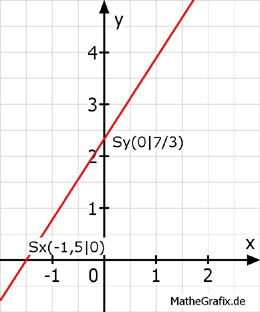

Lineare Funktionen Aufgabe 53 In welchen Punkten schneiden die Geraden die Koordinatenachsen? 14x - 9y + 21 = 0 Für alle Punkte auf der y-Achse gilt x = 0 Für alle Punkte auf der x-Achse gilt y = 0 14x - 9y + 21 = 0 |+9y 14x + 21 = 9y |:9 14 7 ---- x + --- = y 9 3 14 7 7 y = ---- * 0 + --- = --- 9 3 3 7 Sy(0|---) 3 14 7 7 0 = ---- x + --- |- --- 9 3 3 7 14 - --- = ---- x |*9 3 9 - 21 = 14x |:14 x = -1,5 Sx(-1,5|0) 